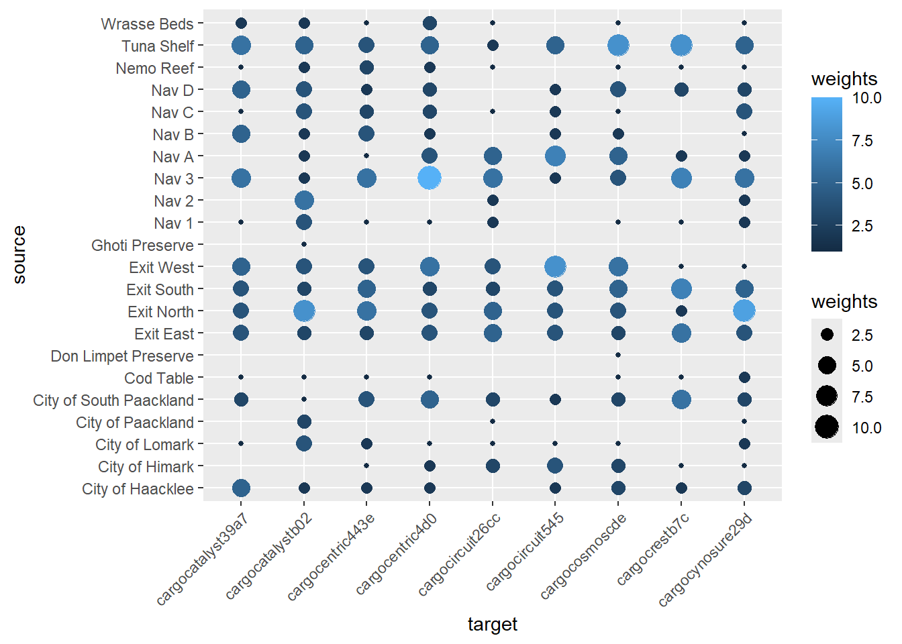
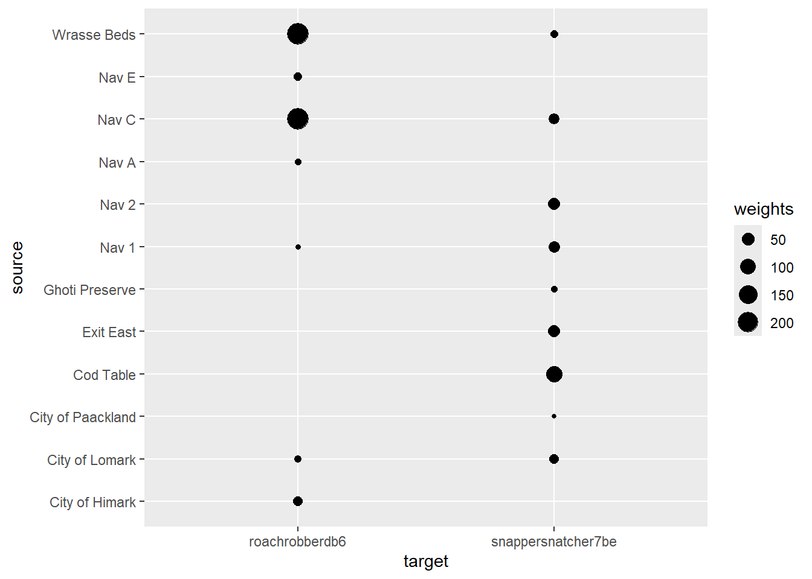
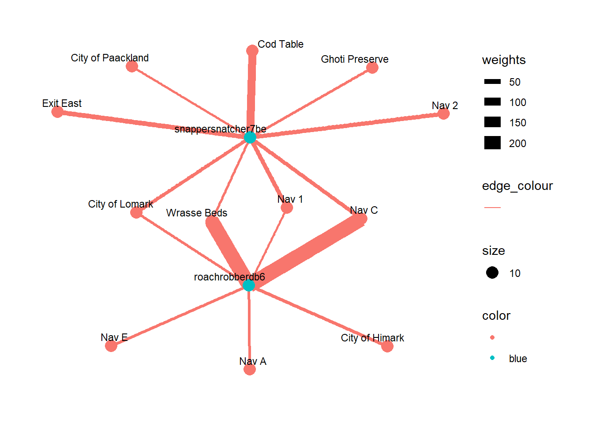

pacman::p_load(tidyverse, jsonlite, DT, lubridate,
igraph, tidygraph, ggraph,
visNetwork, sf)Take Home Exercise 3
VAST 2024 Mini Challenge 2
Mini-Challenge 2: Creating Signatures for Geo-Temporal Patterns
Mini-challenge 2 focuses on analyzing ship movements and shipping records to understand illegal fishing practices. FishEye analysts need help creating visualizations to show patterns of ship movements and identify suspicious behaviors. They also want to understand how the commercial fishing community changed after a company was caught fishing illegally.
The details of the mini challenge can be found here.
Tasks and Questions
FishEye analysts need your help to perform geographic and temporal analysis of the CatchNet data so they can prevent illegal fishing from happening again. Your task is to develop new visual analytics tools and workflows that can be used to discover and understand signatures of different types of behavior. Can you use your tool to visualize a signature of SouthSeafood Express Corp’s illegal behavior? FishEye needs your help to develop a workflow to find other instances of illegal behavior.
FishEye analysts have long wanted to better understand the flow of commercially caught fish through Oceanus’s many ports. But as they were loading data into CatchNet, they discovered they had purchased the wrong port records. They wanted to get the ship off-load records, but they instead got the port-exit records (essentially trucks/trains leaving the port area). Port exit records do not include which vessel that delivered the products. Given this limitation, develop a visualization system to associate vessels with their probable cargos. Which vessels deliver which products and when? What are the seasonal trends and anomalies in the port exit records?
Develop visualizations that illustrate the inappropriate behavior of SouthSeafood Express Corp vessels. How do their movement and catch contents compare to other fishing vessels? When and where did SouthSeafood Express Corp vessels perform their illegal fishing? How many different types of suspicious behaviors are observed? Use visual evidence to justify your conclusions.
To support further Fisheye investigations, develop visual analytics workflows that allow you to discover other vessels engaging in behaviors similar to SouthSeafood Express Corp’s illegal activities? Provide visual evidence of the similarities.
How did fishing activity change after SouthSeafood Express Corp was caught? What new behaviors in the Oceanus commercial fishing community are most suspicious and why?
1.0 Data Preparation
1.1 Loading R Packages
1.2 Loading the Data
Loading the .json data using jsonlite package.
mc2_data <- fromJSON("data/MC2/mc2.json")mc2 is a directed multigraph, consists of nodes dataframe and links dataframe.
oceanus_map <- read_sf("data/MC2/Oceanus Information/Oceanus Geography.geojson")Loading the oceanus map:
ggplot(oceanus_map) +
geom_sf(color = "black",
) +
theme_void() +
geom_sf_text(aes(label = Name), size = 2,
vjust = 1.5)
1.3 Extracting the tibbles for nodes and links
mc2_nodes_raw <- as_tibble(mc2_data$nodes)mc2_edges_raw <- as_tibble(mc2_data$links)1.4 Checking for missing values in data
colSums(is.na(mc2_nodes_raw)) type _last_edited_by _date_added
0 0 0
_last_edited_date _raw_source _algorithm
0 0 0
name id Name
5627 0 5317
Description Activities kind
5623 0 5613
qty_tons date flag_country
330 330 5341
company tonnage length_overall
5458 5359 5354
style fish_species_present
5635 0 colSums(is.na(mc2_edges_raw)) type time dwell _last_edited_by
0 13101 13101 0
_date_added _last_edited_date _raw_source _algorithm
0 0 0 0
source target key date
0 0 0 258542
data_author aphorism holiday_greeting wisdom
269156 269669 270639 269719
saying of the sea
269750 1.5 Parsing the time with lubridate
As the _date_added and _last_edited_date contains a mixture of format, we first extract the date in “yyyy-mm-dd” format using substr.
mc2_nodes_raw <- mc2_nodes_raw |>
mutate(`_date_added` = substr(`_date_added`,1,10)) |>
mutate(`_date_added` = ymd(`_date_added`)) |>
mutate(`_last_edited_date` = substr(`_last_edited_date`,1,10)) |>
mutate(`_last_edited_date` = ymd(`_last_edited_date`)) |>
mutate(date = ymd(date))mc2_edges_raw <- mc2_edges_raw %>%
mutate(`_date_added` = substr(`_date_added`,1,10)) %>%
mutate(`_date_added` = ymd(`_date_added`)) %>%
mutate(`_last_edited_date`= substr(`_last_edited_date`,1,10)) %>%
mutate(`_last_edited_date` = ymd(`_last_edited_date`)) %>%
mutate(time = ymd_hms(time))Understanding the Data
unique_nodes_type <- mc2_nodes_raw |> distinct(type)
unique_nodes_type# A tibble: 12 × 1
type
<chr>
1 Entity.Commodity.Fish
2 Entity.Location.City
3 Entity.Document.DeliveryReport
4 Entity.Vessel.FishingVessel
5 Entity.Vessel.Other
6 Entity.Vessel.Ferry.Passenger
7 Entity.Vessel.CargoVessel
8 Entity.Vessel.Ferry.Cargo
9 Entity.Vessel.Research
10 Entity.Vessel.Tour
11 Entity.Location.Point
12 Entity.Location.Region unique_edges_type <- mc2_edges_raw |> distinct(type)
unique_edges_type# A tibble: 3 × 1
type
<chr>
1 Event.TransportEvent.TransponderPing
2 Event.Transaction
3 Event.HarborReport 1.6 Aggregating weight for edges
To get aggregated weight for the edges by unique source, target and type.
mc2_edges_agg <-
mc2_edges_raw %>%
distinct() %>%
mutate(source = as.character(source),
target = as.character(target),
type = as.character(type)) %>%
group_by(source, target, type) %>%
summarise(weights = n()) %>%
filter(source!=target)
ungroupfunction (x, ...)
{
UseMethod("ungroup")
}
<bytecode: 0x0000023c6986fc08>
<environment: namespace:dplyr>2.0 Task 1
2.1 Flow of fishing vessels
FishEye analysts have long wanted to better understand the flow of commercially caught fish through Oceanus’s many ports.
fishing_vessels_nodes <- mc2_nodes_raw %>%
filter(type == "Entity.Vessel.FishingVessel")There is a total of 178 Fishing vessels in Oceanus.
2.2 Fishing ground locations
fishing_ground <- mc2_nodes_raw %>%
filter(kind == "Fishing Ground") non_fishing_ground <- mc2_nodes_raw %>%
filter(kind == "Ecological Preserve") There are three fishing grounds:
1. Cod Table
2. Wrasse Beds
3. Tuna Shelf
Fishing outside these fishing grounds are considered illegal fishing.
cargo_vessels <- mc2_nodes_raw %>%
filter(type == "Entity.Vessel.CargoVessel") %>%
arrange(desc(tonnage))
cargo_vessels# A tibble: 100 × 20
type `_last_edited_by` `_date_added` `_last_edited_date` `_raw_source`
<chr> <chr> <date> <date> <chr>
1 Entity.Ves… Melinda Manning 2035-02-01 2035-02-17 Oceanus Vess…
2 Entity.Ves… Harvey Janus 2034-12-02 2034-12-22 Oceanus Vess…
3 Entity.Ves… Olokun Daramola 2035-02-13 2035-03-02 Oceanus Vess…
4 Entity.Ves… Harvey Janus 2034-12-03 2034-12-15 Oceanus Vess…
5 Entity.Ves… Harvey Janus 2035-02-20 2035-03-03 Oceanus Vess…
6 Entity.Ves… Harvey Janus 2035-01-06 2035-01-21 Oceanus Vess…
7 Entity.Ves… Jack Inch 2035-02-01 2035-02-20 Oceanus Vess…
8 Entity.Ves… Jack Inch 2034-11-08 2034-11-21 Oceanus Vess…
9 Entity.Ves… Jack Inch 2034-12-12 2034-12-28 Oceanus Vess…
10 Entity.Ves… Jack Inch 2034-12-31 2035-01-12 Oceanus Vess…
# ℹ 90 more rows
# ℹ 15 more variables: `_algorithm` <chr>, name <chr>, id <chr>, Name <chr>,
# Description <chr>, Activities <list>, kind <chr>, qty_tons <dbl>,
# date <date>, flag_country <chr>, company <chr>, tonnage <int>,
# length_overall <int>, style <chr>, fish_species_present <list>There are 100 cargo vessels, with tonnage ranging from 2,100 to 76,300.
2.3 Which fishing vessels frequent the fishing sites
mc2_edges_raw |>
filter(source %in% c("Cod Table","Wrasse Beds","Tuna Shelf")) |>
group_by(target, source) |>
summarise(n = n()) |>
arrange(desc(n))# A tibble: 557 × 3
# Groups: target [287]
target source n
<chr> <chr> <int>
1 saltyskippera9e Wrasse Beds 1460
2 rainbowtroutraider4d0 Wrasse Beds 1413
3 europeanperchpirated9b Tuna Shelf 1265
4 pinksalmonpirate2a3 Wrasse Beds 1256
5 tenchtaker595 Wrasse Beds 1183
6 pollockpirate212 Wrasse Beds 1147
7 fishtracker03e Wrasse Beds 1115
8 yellowfintunataker08b Tuna Shelf 1079
9 halibuthero9b9 Tuna Shelf 1059
10 tigermuskellungemaster012 Wrasse Beds 1048
# ℹ 547 more rows2.4 Which fishing vessels frequent the non-fishing sites
mc2_edges_raw %>%
filter(source %in% c("Ghoti Preserve","Nemo Reef", "Don Limpet Preserve")) %>%
group_by(target, source) %>%
summarise(n = n()) %>%
arrange(desc(n))# A tibble: 248 × 3
# Groups: target [219]
target source n
<chr> <chr> <int>
1 europeanperchpirated9b Nemo Reef 1040
2 manatee17ea Don Limpet Preserve 884
3 yellowfintunataker08b Nemo Reef 863
4 anchovyassaulterb1c Nemo Reef 843
5 halibuthero9b9 Nemo Reef 833
6 bluefishbandit8ec Nemo Reef 782
7 herringharpooner843 Nemo Reef 763
8 pacificcodcapturer81c Nemo Reef 719
9 welscatfishwrangler6ae Nemo Reef 613
10 pompanoplunderere5d Nemo Reef 596
# ℹ 238 more rows2.5 The flow of cargo
transponder_ping_edge_agg <- mc2_edges_agg %>%
filter(type == "Event.TransportEvent.TransponderPing")transponder_ping_edge_agg %>%
filter(str_detect(target, "cargo")) %>%
group_by(target) %>%
ggplot(aes(x = target, y = source)) +
geom_point(aes(size = weights, color = weights)) +
theme(axis.text.x = element_text(angle = 45, hjust = 1))
cargo_nodes <- mc2_nodes_raw %>%
filter(type == "Entity.Vessel.CargoVessel")delivery_nodes <- mc2_nodes_raw %>%
filter(type == "Entity.Document.DeliveryReport")transaction_edges <- mc2_edges_raw %>%
filter(type == "Event.Transaction")3.0 Task 2
Develop visualizations that illustrate the inappropriate behavior of SouthSeafood Express Corp vessels. How do their movement and catch contents compare to other fishing vessels? When and where did SouthSeafood Express Corp vessels perform their illegal fishing? How many different types of suspicious behaviors are observed? Use visual evidence to justify your conclusions.
3.1 Illegal fishing by SouthSeafood Express Corp
SouthSeafood Express Corp operates two fishing vessels by the id of “snappersnatcher7be” and “roachrobberdb6”.
transponder_ping_edge_agg %>%
filter(target %in% c("snappersnatcher7be","roachrobberdb6")) %>%
group_by(target) %>%
ggplot(aes(x=target, y=source,
size = weights)) +
geom_point()
southseafood_edge <- mc2_edges_raw %>%
filter(type == "Event.TransportEvent.TransponderPing") %>%
filter(target %in% c("snappersnatcher7be","roachrobberdb6")) %>%
arrange(target,time)ssf_edges_agg <-
southseafood_edge %>%
distinct() %>%
group_by(source, target, type) %>%
summarise(weights = n()) %>%
filter(source!=target) %>%
ungroupid1 <- ssf_edges_agg %>%
select(source) %>%
rename(id = source)
id2 <- ssf_edges_agg %>%
select(target) %>%
rename(id = target)
mc2_nodes1 <- rbind(id1,id2) %>%
distinct() ssf_graph <- tbl_graph(nodes = mc2_nodes1,
edges = ssf_edges_agg,
directed = TRUE)# Add a color column to nodes
ssf_graph <- ssf_graph %>%
activate(nodes) %>%
mutate(color = case_when(
id %in% c("snappersnatcher7be", "roachrobberdb6") ~ "blue",
TRUE ~ ""
))
# Create the plot
ssf_graph %>%
activate(edges) %>%
arrange(desc(weights)) %>%
ggraph(layout = "fr") +
geom_edge_link(aes(color = "",
linewidth = weights)) +
geom_node_point(aes(color = color, size = 10)) +
theme_graph() +
theme(
plot.background = element_rect(fill = "white", color = NA),
text = element_text(color = "black"))+
geom_node_text(aes(label = id),
repel = TRUE,
vjust = 1,
hjust = 1,
size = 3)
4.0 Task 4
The Questions:
How did fishing activity change after SouthSeafood Express Corp was caught?
What new behaviors in the Oceanus commercial fishing community are most suspicious and why?
In order to understand the change in fishing activities, we first have to determine the date where SouthSeafood Express Corp was caught. We will use this timeline as the
The final activities of SouthSeafood’s vessels are on 2035-05-16 (snappersnatcher7be) and 2035-05-16 (roachrobberdb6) according to the transponder pings. Hence, we can conclude that the SouthSeafood is caught for illegal fishing, and had ceased operating its fishing vessels since 2035-05-16.